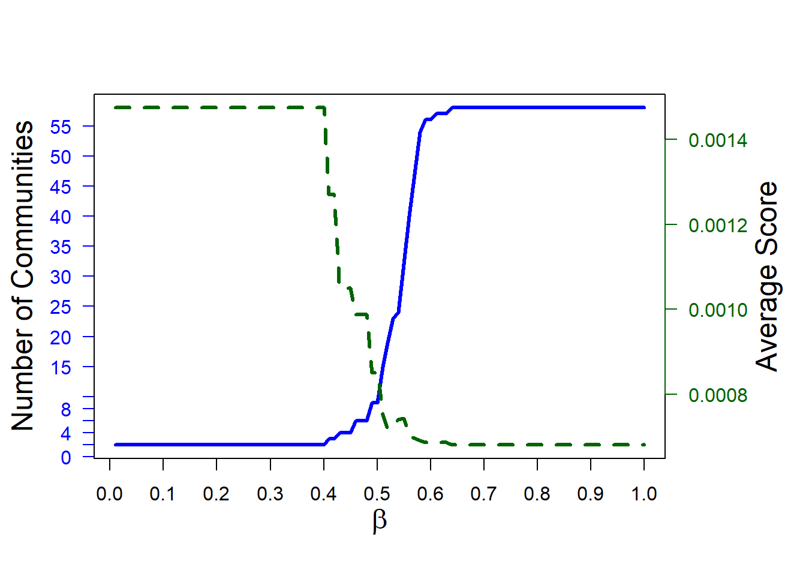

### Macro level
runLPA = FALSE # takes quite longAnalyze CAM data on micro, meso, macro level for part II of basal attributes article
1 global variables
2 Notes
In graph theory and network analysis, the terms “micro,” “meso” and “macro” refer to different scales or levels of analysis within a network. Each of these levels focuses on different types of elements and interactions within the network, allowing for a varied understanding of the structure and dynamics of the network as a whole.
3 load data files
# sets the directory of location of this script as the current directory
# setwd(dirname(rstudioapi::getSourceEditorContext()$path))
### load packages
require(pacman)
p_load('tidyverse', 'jsonlite', 'magrittr', 'xlsx',
'stargazer', 'psych', 'jtools', 'DT', 'ggstatsplot',
'lavaan',
'regsem', 'MplusAutomation', 'igraph', 'shiny', 'ggplot2', 'tidyLPA', 'MultilayerExtraction',
'Matrix', 'igraph', 'foreach', 'doParallel', 'parallel', 'R.matlab',
'reticulate',
'RColorBrewer')
# To install MultilayerExtraction (https://github.com/jdwilson4/MultilayerExtraction):
# install.packages("devtools")
# library(devtools, quietly = TRUE)
#
# #install and load MultilayerExtraction
# devtools::install_github('jdwilson4/multilayer_extraction')
#
library(MultilayerExtraction, quietly = TRUE)
# reticulate::py_config()
# reticulate::py_module_available("pycairo")
# reticulate::py_module_available("cairocffi")
if(!reticulate::py_module_available("igraph")){
py_install("igraph") # pip install python-igraph
}
if(!reticulate::py_module_available("modularitypruning")){
py_install("modularitypruning") # pip install modularitypruning
}
if(!reticulate::py_module_available("matplotlib")){
py_install("matplotlib")
}
if(!reticulate::py_module_available("scipy")){
py_install("scipy")
}
if(!reticulate::py_module_available("leidenalg")){
py_install("leidenalg")
}
if(!reticulate::py_module_available("os")){
py_install("os")
}
if(!reticulate::py_module_available("seed")){
py_install("seed")
}
if(!reticulate::py_module_available("numpy")){
py_install("numpy")
}
## install Python modules
# py_install("matplotlib")
# py_install("scipy")
# py_install("cairocffi")
# py_install("pycairo") # pip install pycairo
setwd("outputs/01_dataPreperation/final")
### load questionnaire
questionnaire <- readRDS(file = "questionnaire.rds")
CAMfiles <- readRDS(file = "CAMfiles.rds")
CAMdrawn <- readRDS(file = "CAMdrawn.rds")
CAMaggregated <- readRDS(file = "CAMaggregated.rds")
networkIndicators <- readRDS(file = "networkIndicators.rds")
CAMwordlist <- xlsx::read.xlsx2(file = "CAMwordlist.xlsx", sheetIndex = 1)
CAMwordlist$mean_valence <- as.numeric(CAMwordlist$mean_valence)
CAMwordlist$mean_degree <- as.numeric(CAMwordlist$mean_degree)
# CAMwordlist$mean_transitivity <- as.numeric(CAMwordlist$mean_transitivity)
### load functions
# print(getwd())
setwd("../../../functions")
for(i in 1:length(dir())){
# print(dir()[i])
source(dir()[i], encoding = "utf-8")
}
setwd("../functions_CAMapp")
for(i in 1:length(dir())){
# print(dir()[i])
source(dir()[i], encoding = "utf-8")
}
rm(i)
### summary function
data_summary <- function(data, varname, groupnames){
require(plyr)
summary_func <- function(x, col){
c(mean = mean(x[[col]], na.rm=TRUE),
se = sd(x[[col]], na.rm=TRUE) / sqrt(length(x[[col]])))
}
data_sum<-ddply(data, groupnames, .fun=summary_func,
varname)
data_sum <- plyr::rename(data_sum, c("mean" = varname))
return(data_sum)
}4 Describe sample
table(questionnaire$socio_sex)
Female Male Prefer not to say
53 114 2 round(x = table(questionnaire$socio_sex) / nrow(questionnaire) * 100, digits = 2)
Female Male Prefer not to say
31.36 67.46 1.18 psych::describe(x = questionnaire[, c("socio_age", "total_min_prolific")]) vars n mean sd median trimmed mad min max range
socio_age 1 169 30.34 9.17 28.00 29.22 8.90 18.00 71.00 53.00
total_min_prolific 2 169 35.39 13.16 33.43 33.93 10.25 12.17 91.88 79.72
skew kurtosis se
socio_age 1.30 2.25 0.71
total_min_prolific 1.41 3.09 1.015 Micro level
- Micro-level analysis focuses on the smallest units of analysis in a network — the individual nodes and the edges between them.
5.1 Distributions (valence, degree, local clustering coefficient)
Check distributions of
- valence
- degree
- local clustering coefficient (transitivity)
valenceData <- CAMfiles[[1]]
valenceData$value[valenceData$value == 10] <- 0
valenceData$text <-
str_replace_all(string = valenceData$text,
pattern = " ",
replacement = " ")
tmp_names <- sort(unique(valenceData$text))
length(tmp_names)[1] 33hist1_names <- tmp_names[1:16]
hist2_names <- tmp_names[17:length(tmp_names)]
# adjust aesthetics of ggplot
ggplot_theme <- theme(
axis.title.x = element_blank(),
axis.title.y = element_text(size = 12),
axis.text.x = element_text(
size = 10,
hjust = 0.5,
vjust = 0.5,
face = "plain",
colour = "black"
),
axis.text.y = element_text(
size = 12,
face = "plain",
colour = "black"
),
panel.border = element_blank(),
axis.line = element_line(colour = "black"),
panel.grid.major = element_blank(),
panel.grid.minor = element_blank(),
panel.background = element_blank()
)
### plot average valence
#> histograms sorted by mean valence
hist1_names_mean <-
CAMwordlist[order(CAMwordlist$mean_valence, decreasing = TRUE), "Words"][1:16]
hist2_names_mean <-
CAMwordlist[order(CAMwordlist$mean_valence, decreasing = TRUE), "Words"][17:33]
valenceData %>% filter(text %in% hist1_names_mean) %>%
ggplot(aes(x = value)) + geom_histogram() +
facet_wrap( ~ factor(text, levels = hist1_names_mean),
ncol = 4,
nrow = 4) +
ggtitle("Sorted by avg. valence (first)") + ggplot_theme`stat_bin()` using `bins = 30`. Pick better value with `binwidth`.
valenceData %>% filter(text %in% hist2_names_mean) %>%
ggplot(aes(x = value)) + geom_histogram() +
facet_wrap( ~ factor(text, levels = hist2_names_mean),
ncol = 4,
nrow = 5) +
ggtitle("Sorted by avg. valence (second)") + ggplot_theme`stat_bin()` using `bins = 30`. Pick better value with `binwidth`.
### create data for mean degree, transitivity
valenceData$degree <- NA
valenceData$transitivity <- NA
for (i in unique(valenceData$participantCAM)) {
tmp_deg <- igraph::degree(graph = CAMdrawn[[i]], mode = "total")
tmp_transitivity <-
igraph::transitivity(graph = as.undirected(CAMdrawn[[i]]),
type = "local")
counter = 1
for (n in V(CAMdrawn[[i]])$name) {
valenceData[valenceData$participantCAM %in% i &
valenceData$id == n, "degree"] <- tmp_deg[counter]
valenceData[valenceData$participantCAM %in% i &
valenceData$id == n, "transitivity"] <-
tmp_transitivity[counter]
counter = counter + 1
}
}
### plot average degree
#> histograms sorted by mean degree
hist1_names_degree <-
CAMwordlist[order(CAMwordlist$mean_degree, decreasing = TRUE), "Words"][1:16]
hist2_names_degree <-
CAMwordlist[order(CAMwordlist$mean_degree, decreasing = TRUE), "Words"][17:33]
valenceData %>% filter(text %in% hist1_names_degree) %>%
ggplot(aes(x = degree)) + geom_histogram() +
facet_wrap( ~ factor(text, levels = hist1_names_degree),
ncol = 4,
nrow = 4) +
ggtitle("Sorted by avg. degree (first)") + ggplot_theme`stat_bin()` using `bins = 30`. Pick better value with `binwidth`.
valenceData %>% filter(text %in% hist2_names_degree) %>%
ggplot(aes(x = degree)) + geom_histogram() +
facet_wrap( ~ factor(text, levels = hist2_names_degree),
ncol = 4,
nrow = 5) +
ggtitle("Sorted by avg. degree (second)") + ggplot_theme`stat_bin()` using `bins = 30`. Pick better value with `binwidth`.
### plot average transitivity
#> histograms sorted by mean transitivity
#> ! interpret carefully
CAMwordlist$mean_transitivity <- NA
for(i in 1:nrow(CAMwordlist)){
CAMwordlist$mean_transitivity[i] <- mean(x = valenceData$transitivity[valenceData$text == CAMwordlist$Words[i]], na.rm = TRUE)
}
hist1_names_transitivity <-
CAMwordlist[order(CAMwordlist$mean_transitivity, decreasing = TRUE), "Words"][1:16]
hist2_names_transitivity <-
CAMwordlist[order(CAMwordlist$mean_transitivity, decreasing = TRUE), "Words"][17:33]
valenceData %>% filter(text %in% hist1_names_transitivity) %>%
ggplot(aes(x = transitivity)) + geom_histogram() +
facet_wrap( ~ factor(text, levels = hist1_names_transitivity),
ncol = 4,
nrow = 4) +
ggtitle("Sorted by avg. local clustering coefficient (first)") + ggplot_theme`stat_bin()` using `bins = 30`. Pick better value with `binwidth`.Warning: Removed 1443 rows containing non-finite outside the scale range
(`stat_bin()`).
valenceData %>% filter(text %in% hist2_names_transitivity) %>%
ggplot(aes(x = transitivity)) + geom_histogram() +
facet_wrap( ~ factor(text, levels = hist2_names_transitivity),
ncol = 4,
nrow = 5) +
ggtitle("Sorted by avg. local clustering coefficient (second)") + ggplot_theme`stat_bin()` using `bins = 30`. Pick better value with `binwidth`.Warning: Removed 970 rows containing non-finite outside the scale range
(`stat_bin()`).
5.2 check bimodal pattern of local clustering coefficient
tmp_transitivity_0 <- valenceData$participantCAM[valenceData$text == "Insekten ähnlich" & valenceData$transitivity == 0 & !is.na(valenceData$transitivity)]
tmp_transitivity_1 <- valenceData$participantCAM[valenceData$text == "Insekten ähnlich" & valenceData$transitivity == 1 & !is.na(valenceData$transitivity)]
plot(CAMdrawn[[tmp_transitivity_0[1]]], edge.arrow.size = .7,
layout=layout_nicely, vertex.frame.color="black", asp = .5, margin = -0.1,
vertex.size = 10, vertex.label.cex = .9)
plot(CAMdrawn[[tmp_transitivity_1[1]]], edge.arrow.size = .7,
layout=layout_nicely, vertex.frame.color="black", asp = .5, margin = -0.1,
vertex.size = 10, vertex.label.cex = .9)
5.3 correlation of distributions micro level
cor.plot(r = cor(valenceData[, c("value", "degree", "transitivity")], use = "pairwise"))
6 Meso level
- Meso-level analysis bridges the micro and macro by focusing on groups and communities within the network.
6.1 Leiden algorithm
modules <- reticulate::py_module_available("leidenalg") && reticulate::py_module_available("igraph")
modules[1] TRUEadjacency_matrix <- CAMaggregated[[1]]
diag(adjacency_matrix) <- 0
graph_object <-
graph_from_adjacency_matrix(adjacency_matrix, mode = "undirected")
partition <- leiden::leiden(object = graph_object, resolution_parameter = 1.37)
for (i in sort(unique(partition))) {
cat(
"\nfor partion",
i,
"the following words have been found:\n",
rownames(adjacency_matrix)[partition == i],
"\n"
)
}
for partion 1 the following words have been found:
aktive Formänderung durch Umwelteinwirkung reaktionsfähig passive Formänderung durch Umwelteinwirkung autonom passive Verhaltensänderung durch Umwelteinwirkung aktive Verhaltensänderung durch Umwelteinwirkung intelligent multifunktional technologisch
for partion 2 the following words have been found:
zuverlässig wartungsfrei selbstheilend widerstandsfähig selbstreparierend haltbar robust langlebig
for partion 3 the following words have been found:
Akzeptanz eines neuen Materialsystems wartungsintensiv enthält Kunststoff leicht zerstörbar umweltschädlich
for partion 4 the following words have been found:
ökologisch elektronikfrei nachhaltig umweltfreundlich
for partion 5 the following words have been found:
Energie speichernd energieeffizient energieautonom Energie generierend
for partion 6 the following words have been found:
Insekten ähnlich bioinspiriert lebensähnlich node.cols <- brewer.pal(max(c(3, partition)), "Pastel1")[partition]
### colour aggregated CAM
g = CAMaggregated[[2]]
g2 = simplify(CAMaggregated[[2]])
# plot(g2, edge.arrow.size=0.01,
# vertex.size=diag(CAMaggregated[[1]]) / max(diag(CAMaggregated[[1]]))*20)
E(g2)$weight = sapply(E(g2), function(e) {
length(all_shortest_paths(g, from=ends(g2, e)[1], to=ends(g2, e)[2])$res) } )
E(g2)$weight = E(g2)$weight * 2
for(i in 1:5){
plot(g2, edge.arrow.size = 0,
layout=layout_nicely, vertex.frame.color="black", asp = .4, margin = .1,
vertex.size=diag(CAMaggregated[[1]]) / max(diag(CAMaggregated[[1]]))*5,
vertex.label.cex = .9,
edge.weight=2, edge.width=(E(g2)$weight/35), vertex.color = node.cols)
}


6.1.1 save final parition solution
setwd("outputs/02_analyses_CAMs/Leiden algorithm aggregated CAM")
h = 1
for (i in sort(unique(partition))) {
if(h == 1){
dat_out <- data.frame(parition = i, words = rownames(adjacency_matrix)[partition == i])
}else{
dat_out <- rbind(dat_out,
data.frame(parition = i, words = rownames(adjacency_matrix)[partition == i]))
}
h = h + 1
}
dat_out$mean_valence <- NA
dat_out$sd_valence <- NA
for(i in 1:nrow(dat_out)){
dat_out$mean_valence[i] <- CAMwordlist$mean_valence[CAMwordlist$Words == dat_out$words[i]]
dat_out$sd_valence[i] <- CAMwordlist$sd_valence[CAMwordlist$Words == dat_out$words[i]]
}
dat_out$words <- str_replace_all(string = dat_out$words, pattern = " {2,6}", replacement = " ")
dat_out$sd_valence <- as.numeric(dat_out$sd_valence)
dat_out$mean_valence <- round(x = dat_out$mean_valence, digits = 2)
## save as .xlsx file
xlsx::write.xlsx2(x = dat_out, file = "LeidenAlgorithm_solution.xlsx", row.names = FALSE)
## save as R object
saveRDS(dat_out, file = "LeidenAlgorithm_solution.rds")
## add means for partitions
partitions_means <- dat_out %>%
group_by(parition) %>%
summarise(N = n(), mean = mean (mean_valence), SD = mean(sd_valence))
dat_out$sd_valence <- NULL
dat_out$group_mean <- NA
partitions_means$mean <- round(x = partitions_means$mean, digits = 2)
partitions_means$SD <- round(x = partitions_means$SD, digits = 2)
for(i in 1:nrow(partitions_means)){
tmp_boolean <- dat_out$parition == i
tmp_boolean <- which(tmp_boolean)[length(which(tmp_boolean))]
dat_out$group_mean[tmp_boolean] <- paste0(partitions_means$mean[i], " (", partitions_means$SD[i], ")")
}
stargazer(dat_out, type = "html", summary = FALSE, rownames = FALSE, out = "tableAppendixD.html")
<table style="text-align:center"><tr><td colspan="4" style="border-bottom: 1px solid black"></td></tr><tr><td style="text-align:left">parition</td><td>words</td><td>mean_valence</td><td>group_mean</td></tr>
<tr><td colspan="4" style="border-bottom: 1px solid black"></td></tr><tr><td style="text-align:left">1</td><td>aktive Formänderung durch Umwelteinwirkung</td><td>0.180</td><td></td></tr>
<tr><td style="text-align:left">1</td><td>reaktionsfähig</td><td>0.670</td><td></td></tr>
<tr><td style="text-align:left">1</td><td>passive Formänderung durch Umwelteinwirkung</td><td>-0.020</td><td></td></tr>
<tr><td style="text-align:left">1</td><td>autonom</td><td>0.750</td><td></td></tr>
<tr><td style="text-align:left">1</td><td>passive Verhaltensänderung durch Umwelteinwirkung</td><td>0.060</td><td></td></tr>
<tr><td style="text-align:left">1</td><td>aktive Verhaltensänderung durch Umwelteinwirkung</td><td>0.270</td><td></td></tr>
<tr><td style="text-align:left">1</td><td>intelligent</td><td>1.350</td><td></td></tr>
<tr><td style="text-align:left">1</td><td>multifunktional</td><td>1.650</td><td></td></tr>
<tr><td style="text-align:left">1</td><td>technologisch</td><td>0.760</td><td>0.63 (1.07)</td></tr>
<tr><td style="text-align:left">2</td><td>zuverlässig</td><td>2.170</td><td></td></tr>
<tr><td style="text-align:left">2</td><td>wartungsfrei</td><td>1.750</td><td></td></tr>
<tr><td style="text-align:left">2</td><td>selbstheilend</td><td>1.650</td><td></td></tr>
<tr><td style="text-align:left">2</td><td>widerstandsfähig</td><td>1.740</td><td></td></tr>
<tr><td style="text-align:left">2</td><td>selbstreparierend</td><td>1.790</td><td></td></tr>
<tr><td style="text-align:left">2</td><td>haltbar</td><td>1.930</td><td></td></tr>
<tr><td style="text-align:left">2</td><td>robust</td><td>1.820</td><td></td></tr>
<tr><td style="text-align:left">2</td><td>langlebig</td><td>2.220</td><td>1.88 (1.07)</td></tr>
<tr><td style="text-align:left">3</td><td>Akzeptanz eines neuen Materialsystems</td><td>0.360</td><td></td></tr>
<tr><td style="text-align:left">3</td><td>wartungsintensiv</td><td>-2.040</td><td></td></tr>
<tr><td style="text-align:left">3</td><td>enthält Kunststoff</td><td>-1.040</td><td></td></tr>
<tr><td style="text-align:left">3</td><td>leicht zerstörbar</td><td>-1.800</td><td></td></tr>
<tr><td style="text-align:left">3</td><td>umweltschädlich</td><td>-2.600</td><td>-1.42 (1.06)</td></tr>
<tr><td style="text-align:left">4</td><td>ökologisch</td><td>1.900</td><td></td></tr>
<tr><td style="text-align:left">4</td><td>elektronikfrei</td><td>0.460</td><td></td></tr>
<tr><td style="text-align:left">4</td><td>nachhaltig</td><td>2.380</td><td></td></tr>
<tr><td style="text-align:left">4</td><td>umweltfreundlich</td><td>2.490</td><td>1.81 (1.01)</td></tr>
<tr><td style="text-align:left">5</td><td>Energie speichernd</td><td>1.500</td><td></td></tr>
<tr><td style="text-align:left">5</td><td>energieeffizient</td><td>2.080</td><td></td></tr>
<tr><td style="text-align:left">5</td><td>energieautonom</td><td>1.430</td><td></td></tr>
<tr><td style="text-align:left">5</td><td>Energie generierend</td><td>1.720</td><td>1.68 (1.06)</td></tr>
<tr><td style="text-align:left">6</td><td>Insekten ähnlich</td><td>-0.120</td><td></td></tr>
<tr><td style="text-align:left">6</td><td>bioinspiriert</td><td>0.780</td><td></td></tr>
<tr><td style="text-align:left">6</td><td>lebensähnlich</td><td>0.330</td><td>0.33 (1.03)</td></tr>
<tr><td colspan="4" style="border-bottom: 1px solid black"></td></tr></table>stargazer(dat_out, type = "latex", summary = FALSE, rownames = FALSE)
% Table created by stargazer v.5.2.3 by Marek Hlavac, Social Policy Institute. E-mail: marek.hlavac at gmail.com
% Date and time: Do, Mai 23, 2024 - 07:55:50
\begin{table}[!htbp] \centering
\caption{}
\label{}
\begin{tabular}{@{\extracolsep{5pt}} cccc}
\\[-1.8ex]\hline
\hline \\[-1.8ex]
parition & words & mean\_valence & group\_mean \\
\hline \\[-1.8ex]
$1$ & aktive Formänderung durch Umwelteinwirkung & $0.180$ & \\
$1$ & reaktionsfähig & $0.670$ & \\
$1$ & passive Formänderung durch Umwelteinwirkung & $$-$0.020$ & \\
$1$ & autonom & $0.750$ & \\
$1$ & passive Verhaltensänderung durch Umwelteinwirkung & $0.060$ & \\
$1$ & aktive Verhaltensänderung durch Umwelteinwirkung & $0.270$ & \\
$1$ & intelligent & $1.350$ & \\
$1$ & multifunktional & $1.650$ & \\
$1$ & technologisch & $0.760$ & 0.63 (1.07) \\
$2$ & zuverlässig & $2.170$ & \\
$2$ & wartungsfrei & $1.750$ & \\
$2$ & selbstheilend & $1.650$ & \\
$2$ & widerstandsfähig & $1.740$ & \\
$2$ & selbstreparierend & $1.790$ & \\
$2$ & haltbar & $1.930$ & \\
$2$ & robust & $1.820$ & \\
$2$ & langlebig & $2.220$ & 1.88 (1.07) \\
$3$ & Akzeptanz eines neuen Materialsystems & $0.360$ & \\
$3$ & wartungsintensiv & $$-$2.040$ & \\
$3$ & enthält Kunststoff & $$-$1.040$ & \\
$3$ & leicht zerstörbar & $$-$1.800$ & \\
$3$ & umweltschädlich & $$-$2.600$ & -1.42 (1.06) \\
$4$ & ökologisch & $1.900$ & \\
$4$ & elektronikfrei & $0.460$ & \\
$4$ & nachhaltig & $2.380$ & \\
$4$ & umweltfreundlich & $2.490$ & 1.81 (1.01) \\
$5$ & Energie speichernd & $1.500$ & \\
$5$ & energieeffizient & $2.080$ & \\
$5$ & energieautonom & $1.430$ & \\
$5$ & Energie generierend & $1.720$ & 1.68 (1.06) \\
$6$ & Insekten ähnlich & $$-$0.120$ & \\
$6$ & bioinspiriert & $0.780$ & \\
$6$ & lebensähnlich & $0.330$ & 0.33 (1.03) \\
\hline \\[-1.8ex]
\end{tabular}
\end{table} Compute all means for all possible tuples of the identified partitions:
setwd("outputs/02_analyses_CAMs/Leiden algorithm aggregated CAM")
# Generate all combinations of 2 elements
combinations <- combn(partitions_means$parition, 2, simplify = FALSE)
for(i in 1:length(combinations)){
tmp <- data.frame(partitionA = combinations[[i]][1],
partitionB = combinations[[i]][2],
mean = mean(partitions_means$mean[combinations[[i]]]),
wordsA = paste0(dat_out$words[dat_out$parition == combinations[[i]][1]], collapse = " \\ "),
wordsB = paste0(dat_out$words[dat_out$parition == combinations[[i]][2]], collapse = " \\ "))
if(i == 1){
dat_out_hypotheses <- tmp
}else{
dat_out_hypotheses <- rbind(dat_out_hypotheses, tmp)
}
}
dat_out_hypotheses <- dat_out_hypotheses[order(dat_out_hypotheses$mean),]
## save as .xlsx file
xlsx::write.xlsx2(x = dat_out_hypotheses, file = "LeidenAlgorithm_hypotheses.xlsx", row.names = FALSE)
## save as R object
saveRDS(dat_out_hypotheses, file = "LeidenAlgorithm_hypotheses.rds")6.1.2 Leiden algorithm on aggregated multi-edge graph with ModularityPruning (Gibson and Mucha, 2022)
Community detection based on the single-layer multi-edge aggregated graph. Partitions are then pruned with ModularityPruning (http://github.com/ragibson/ModularityPruning) to keep only stable and modularity-optimal solutions.
import numpy as np
import igraph as ig
from modularitypruning import prune_to_stable_partitions
from modularitypruning.leiden_utilities import repeated_parallel_leiden_from_gammas
from modularitypruning.champ_utilities import CHAMP_3D
from modularitypruning.parameter_estimation_utilities import domains_to_gamma_omega_estimates
from modularitypruning.plotting import plot_2d_domains_with_estimates
from modularitypruning.plotting import plot_estimates
from modularitypruning.champ_utilities import CHAMP_2D
from modularitypruning.parameter_estimation_utilities import ranges_to_gamma_estimates
from modularitypruning.plotting import plot_estimates
import matplotlib.pyplot as plt
import os
from random import seed
from python_helpers import print_partition # our local helper scripts
np.set_printoptions(threshold=np.inf)
with open("outputs/01_dataPreperation/final/CAMaggregated_adj_matrix.csv", "r") as f:
names = f.readline()
names = names.split('" "')
names[0] = names[0][1:] # strip the first "
names[-1] = names[-1][:-2] # strip the last \n
names = dict(enumerate(names))
adj_matrix = np.loadtxt(open("outputs/01_dataPreperation/final/CAMaggregated_adj_matrix.csv", "rb"), delimiter=" ", skiprows=1)
# remove self-loops
np.fill_diagonal(adj_matrix, 0)
G = ig.Graph.Adjacency(matrix=adj_matrix, mode="undirected")
gamma_range = (0, 2)
leiden_gammas = np.linspace(*gamma_range, 10 ** 1) # 5 # 100k runs of Leiden algorithm
seed(12345)
partitions = repeated_parallel_leiden_from_gammas(G, leiden_gammas)
# prune to the stable partitions from (gamma=0, omega=0) to (gamma=2, omega=2)
seed(12345)
stable_parts = prune_to_stable_partitions(G, partitions, *gamma_range)
# run CHAMP to obtain the dominant partitions along with their regions of optimality
ranges = CHAMP_2D(G, partitions, gamma_0=0.0, gamma_f=2.0)
# append gamma estimate for each dominant partition onto the CHAMP domains
gamma_estimates = ranges_to_gamma_estimates(G, ranges)
# get some infos about our partitions
for stable_part in stable_parts:
print_partition(stable_part, partitions, names, gamma_estimates)
print("\n\n")
# plot gamma estimates and domains of optimality
plt.rc('text', usetex=True)
plt.rc('font', family='serif')
plot_estimates(gamma_estimates)
plt.title(r"CHAMP Domains of Optimality and $\gamma$ Estimates", fontsize=14)
plt.xlabel(r"$\gamma$", fontsize=14)
plt.ylabel("Number of communities", fontsize=14)
plt.show()6.1.3 Leiden algorithm on multilayer graph with ModularityPruning (Gibson and Mucha, 2022)
Community detection based on a multilayer graph with participants as layers. Partitions are then pruned with ModularityPruning (http://github.com/ragibson/ModularityPruning) to keep only stable and modularity-optimal solutions.
import numpy as np
import igraph as ig
from modularitypruning import prune_to_multilayer_stable_partitions
from modularitypruning.leiden_utilities import repeated_parallel_leiden_from_gammas_omegas
from modularitypruning.champ_utilities import CHAMP_3D
from modularitypruning.parameter_estimation_utilities import domains_to_gamma_omega_estimates
from modularitypruning.plotting import plot_2d_domains_with_estimates
import matplotlib.pyplot as plt
from random import seed
from python_helpers import print_partition # our local helper scripts
import cairocffi
import scipy.io
np.set_printoptions(threshold=np.inf)
# CAMaggregated = scipy.io.loadmat("outputs/01_dataPreperation/final/CAMaggregated_adj_matrices.mat") # !!!
CAMaggregated = scipy.io.loadmat("outputs/01_dataPreperation/final/CAMaggregated_adj_matrices_onlyOnes.mat") # !!!
# import names for labelling
with open("outputs/01_dataPreperation/final/CAMaggregated_adj_matrix.csv", "r") as f:
names = f.readline()
names = names.split('" "')
names[0] = names[0][1:] # strip the first "
names[-1] = names[-1][:-2] # strip the last \n
names = dict(enumerate(names))
adj_matrices = list(CAMaggregated["multigraph_adj_matrices_list"][0,0])
num_layers = len(adj_matrices)
n_per_layer = 33
# nodes 0..32 are layer0
# nodes 33..65 are layer1
# ...
# layer_vec holds the layer membership of each node
# e.g. layer_vec[5] = 2 means that node 5 resides in layer 2 (the third layer)
layer_vec = [i // n_per_layer for i in range(n_per_layer * num_layers)]
interlayer_edges = [(n_per_layer * layer + v, n_per_layer * layer + v + n_per_layer)
for layer in range(num_layers - 1)
for v in range(n_per_layer)]
# intralayer edges: we need a list of tuples (i.e. edgelist)
# recode the node indices according to the scheme described above (33..65 is layer1 etc.).
# note that this is unweighted for now (could add weights to the igraph object)
intralayer_edges = []
for i, adj_matrix in enumerate(adj_matrices):
conn_indices = np.where(adj_matrix)
x_indices, y_indices = conn_indices
x_indices += i * n_per_layer
y_indices += i * n_per_layer
edges = zip(*(x_indices, y_indices))
intralayer_edges += edges
G_interlayer = ig.Graph(interlayer_edges)
G_intralayer = ig.Graph(intralayer_edges)
# remove the double edges we got from constructing the igraph objects with symmetric matrices
G_intralayer = G_intralayer.simplify()
# run Leiden on a uniform 32x32 grid (1024 samples) of gamma and omega in [0, 2]
gamma_range = (0, 2)
omega_range = (0, 2)
leiden_gammas = np.linspace(*gamma_range, 32)
leiden_omegas = np.linspace(*omega_range, 32)
seed(12345)
parts = repeated_parallel_leiden_from_gammas_omegas(G_intralayer, G_interlayer, layer_vec, gammas=leiden_gammas, omegas=leiden_omegas)
# prune to the stable partitions from (gamma=0, omega=0) to (gamma=2, omega=2)
seed(12345)
stable_parts = prune_to_multilayer_stable_partitions(G_intralayer, G_interlayer, layer_vec,
"multiplex", parts,
*gamma_range, *omega_range)
# run CHAMP to obtain the dominant partitions along with their regions of optimality
seed(12345)
domains = CHAMP_3D(G_intralayer, G_interlayer, layer_vec, parts,
gamma_0=gamma_range[0], gamma_f=gamma_range[1],
omega_0=omega_range[0], omega_f=omega_range[1])
# append resolution parameter estimates for each dominant partition onto the CHAMP domains
seed(12345)
domains_with_estimates = domains_to_gamma_omega_estimates(G_intralayer, G_interlayer, layer_vec,
domains, model='multiplex')
for partition in stable_parts:
print_partition(partition, parts, names, domains_with_estimates, type="multilayer")
# plot resolution parameter estimates and domains of optimality
plt.rc('text', usetex=True)
plt.rc('font', family='serif')
plot_2d_domains_with_estimates(domains_with_estimates, xlim=omega_range, ylim=gamma_range)
plt.title(r"CHAMP Domains and ($\omega$, $\gamma$) Estimates", fontsize=16)
plt.xlabel(r"$\omega$", fontsize=20)
plt.ylabel(r"$\gamma$", fontsize=20)
plt.gca().tick_params(axis='both', labelsize=12)
plt.tight_layout()
plt.show()6.1.4 MultilayerExtraction algorithm (Wilson et al., 2017)
Community detection based on a multilayer graph with participants as layers using the MultilayerExtraction by Wilson et al., 2017 (https://github.com/jdwilson4/MultilayerExtraction).
setwd("outputs/02_analyses_CAMs/MultilayerExtraction")
# recode vertex labels to integers
attributes_names <- c(hist1_names, hist2_names)
# there were differences in whitespace between some of the concepts (2 vs. 3 whitespaces) -> fix it
CAMaggregated[[4]][["node1"]][CAMaggregated[[4]][["node1"]] == "Energie generierend"] <- "Energie generierend"
CAMaggregated[[4]][["node2"]][CAMaggregated[[4]][["node2"]] == "Energie generierend"] <- "Energie generierend"
CAMaggregated[[4]][["node1"]][CAMaggregated[[4]][["node1"]] == "Energie speichernd"] <- "Energie speichernd"
CAMaggregated[[4]][["node2"]][CAMaggregated[[4]][["node2"]] == "Energie speichernd"] <- "Energie speichernd"
CAMaggregated[[4]][["node1"]] <- match(CAMaggregated[[4]][["node1"]], attributes_names)
CAMaggregated[[4]][["node2"]] <- match(CAMaggregated[[4]][["node2"]], attributes_names)
# recode layers (CAM IDs) to integers
layer_names <- unique(CAMfiles[[1]]$participantCAM)
CAMaggregated[[4]][["layer"]] <- match(CAMaggregated[[4]][["layer"]], layer_names)
# now we're ready for community extraction using the MultiLayer extraction package
set.seed(12345)
# uncomment to run the algorithm (took around 3 hours on our machine)
# start_time <- Sys.time()
# multilayer_extraction_results <- multilayer.extraction(adjacency = CAMaggregated[[4]], seed = 12345, min.score = 0, prop.sample = .10)
# end_time <- Sys.time()
# end_time - start_time
# saveRDS(multilayer_extraction_results, file = "multilayer_extraction_results.Rda")
multilayer_extraction_results <- readRDS(file = "multilayer_extraction_results.Rda")
plot(multilayer_extraction_results, main = "Diagnostic Plot")
# look at the first ... 20 communities
multilayer_extraction_communities <- data.frame(n_communities = seq(1:20))
multilayer_extraction_communities[paste0("community", 1:20)] <- NA
for(i in 1:20) {
object <- refine(multilayer_extraction_results, k = i, m = length(CAMdrawn), n = nrow(CAMwordlist))
for(j in 1:i) {
multilayer_extraction_communities[i,j+1] <- paste(attributes_names[which(object$Vertices[,j] == 1)], collapse = ", ")
}
}
DT::datatable(multilayer_extraction_communities, options = list(pageLength = 5))7 Macro level
- Macro-level analysis looks at the network as a whole, focusing on large-scale patterns and structures.
7.1 plot aggregated CAM
g = CAMaggregated[[2]]
g2 = simplify(CAMaggregated[[2]])
# plot(g2, edge.arrow.size=0.01,
# vertex.size=diag(CAMaggregated[[1]]) / max(diag(CAMaggregated[[1]]))*20)
E(g2)$weight = sapply(E(g2), function(e) {
length(all_shortest_paths(g, from=ends(g2, e)[1], to=ends(g2, e)[2])$res) } )
E(g2)$weight = E(g2)$weight * 2
# E(g2)$weight[E(g2)$weight == 1] <- NA
V(g2)$color[V(g2)$value <= .5 & V(g2)$value >= -.5] <- "yellow"
V(g2)$shape <- NA
V(g2)$shape <- ifelse(test = V(g2)$color == "yellow", yes = "square", no = "circle")
### > plot multiple times because of random layout
for(i in 1:3){
plot(g2, edge.arrow.size = 0,
layout=layout_nicely, vertex.frame.color="black", asp = .5, margin = -0.1,
vertex.size=diag(CAMaggregated[[1]]) / max(diag(CAMaggregated[[1]]))*5,
vertex.label.cex = .9,
edge.weight=2, edge.width=(E(g2)$weight/45))
}


7.2 hierachical cluster analysis
hc_dat <- data.frame(CAM = unique(CAMfiles[[1]]$CAM), participantCAM = unique(CAMfiles[[1]]$participantCAM))
### create data set
## word vars
for(w in unique(CAMfiles[[1]]$text)){
varName_w <- str_remove_all(string = str_to_title(string = w, locale = "en"), pattern = " |\\W+")
hc_dat[[paste0("N_", varName_w)]] <- NA
hc_dat[[paste0("mean_", varName_w)]] <- NA
hc_dat[[paste0("SD_", varName_w)]] <- NA
}
## get N, mean, sd of single summarized concepts
verbose = FALSE
for(c in unique(CAMfiles[[1]]$CAM)){
if(verbose){
cat("considered CAM: ", c, "\n")
}
tmp_CAM_nodes <- CAMfiles[[1]][CAMfiles[[1]]$CAM == c, ]
tmp_CAM_nodes$value <- ifelse(test = tmp_CAM_nodes$value == 10, yes = 0, no = tmp_CAM_nodes$value)
for(w in unique(CAMfiles[[1]]$text)){
if(verbose){
cat("considered concept: ", w, "\n")
}
varName_w <- str_remove_all(string = str_to_title(string = w, locale = "en"), pattern = " |\\W+")
if(verbose){
cat(" > the freqeuncy, mean, SD are saved with the prefix N_, mean_, SD_ plus
word without white spaces: ", varName_w, "\n")
}
if(sum(tmp_CAM_nodes$text == w) > 0){
tmp_CAM_nodes_w <- tmp_CAM_nodes[tmp_CAM_nodes$text == w, ]
## add N
hc_dat[hc_dat$CAM == c, paste0("N_", varName_w)] <- nrow(tmp_CAM_nodes_w)
## add mean
hc_dat[hc_dat$CAM == c, paste0("mean_", varName_w)] <- mean(x = tmp_CAM_nodes_w$value)
## add SD, only if > 1
hc_dat[hc_dat$CAM == c, paste0("SD_", varName_w)] <- sd(x = tmp_CAM_nodes_w$value)
}
}
if(verbose){
cat("\n")
}
}
### compute clustering
hc_df <- hc_dat[, str_subset(string = colnames(hc_dat), pattern = "mean_")]
hc_df <- hc_df[, colSums(x = !is.na(hc_df)) >= 2] # only considers concepts which where drawn at least 2 times
hc_df_scaled <- scale(hc_df)
dist.eucl <- dist(hc_df_scaled, method = "euclidean")
hc_cluster <- hclust(dist.eucl, method = "ward.D2") # Ward's method
hc_cluster
Call:
hclust(d = dist.eucl, method = "ward.D2")
Cluster method : ward.D2
Distance : euclidean
Number of objects: 169 set_cutOff <- 25
plot(hc_cluster)
abline(h = set_cutOff, col = "red", lty = 2)
rect.hclust(hc_cluster, h=set_cutOff, border = "tomato")
groups <- cutree(hc_cluster, h=set_cutOff)
# groupsOut <- names(table(groups))[table(groups) >= 2]
table(groups)groups
1 2 3
40 106 23 aggregate(hc_df, by=list(cluster=groups), mean, na.rm = TRUE) cluster mean_AkzeptanzEinesNeuenMaterialsystems mean_EnergieSpeichernd
1 1 0.2500000 2.0000000
2 2 0.4339623 1.5094340
3 3 0.1739130 0.5652174
mean_Wartungsintensiv mean_AktiveFormänderungDurchUmwelteinwirkung
1 -1.9750000 0.9250000
2 -2.3018868 -0.1132075
3 -0.9565217 0.2173913
mean_Energieeffizient mean_EnthältKunststoff mean_Ökologisch
1 2.575000 -1.1500000 2.300000
2 2.094340 -1.1226415 1.981132
3 1.130435 -0.4782609 0.826087
mean_Reaktionsfähig mean_Elektronikfrei mean_Zuverlässig mean_Nachhaltig
1 1.3500000 0.9000000 2.650000 2.775000
2 0.4433962 0.3584906 2.245283 2.424528
3 0.5217391 0.1304348 1.000000 1.521739
mean_PassiveFormänderungDurchUmwelteinwirkung mean_Wartungsfrei
1 0.62500000 2.350000
2 -0.28301887 1.679245
3 0.08695652 1.043478
mean_Umweltfreundlich mean_Selbstheilend mean_Widerstandsfähig
1 2.825000 2.4750000 2.3500000
2 2.613208 1.5471698 1.7358491
3 1.347826 0.6956522 0.6956522
mean_Energieautonom mean_InsektenÄhnlich mean_Selbstreparierend mean_Autonom
1 1.9500000 0.45000000 2.5000000 1.2500000
2 1.3679245 -0.33962264 1.7735849 0.6509434
3 0.7826087 -0.08695652 0.6086957 0.3478261
mean_Bioinspiriert mean_PassiveVerhaltensänderungDurchUmwelteinwirkung
1 1.6000000 0.6500000
2 0.5377358 -0.2264151
3 0.4782609 0.3478261
mean_LeichtZerstörbar mean_AktiveVerhaltensänderungDurchUmwelteinwirkung
1 -2.150000 0.95000000
2 -1.820755 0.01886792
3 -1.086957 0.26086957
mean_Intelligent mean_Lebensähnlich mean_Haltbar mean_EnergieGenerierend
1 1.8750000 0.82500000 2.5500000 2.275000
2 1.2452830 0.18867925 1.9811321 1.622642
3 0.9130435 0.08695652 0.6086957 1.173913
mean_Umweltschädlich mean_Robust mean_Langlebig mean_Multifunktional
1 -2.900000 2.2500000 2.800000 2.200000
2 -2.754717 1.8584906 2.198113 1.547170
3 -1.391304 0.9130435 1.304348 1.173913
mean_Technologisch
1 0.9500000
2 0.7358491
3 0.56521747.3 Latent profile analysis
if(runLPA){
valenceDataShort <-
valenceData %>% pivot_wider(names_from = text,
values_from = value,
id_cols = CAM) # equal to hc_df
lpa <- valenceDataShort %>% select(-CAM) %>%
estimate_profiles(1:9, variances = c("equal", "equal", "varying"),
covariances = c("zero", "equal", "zero"))
}